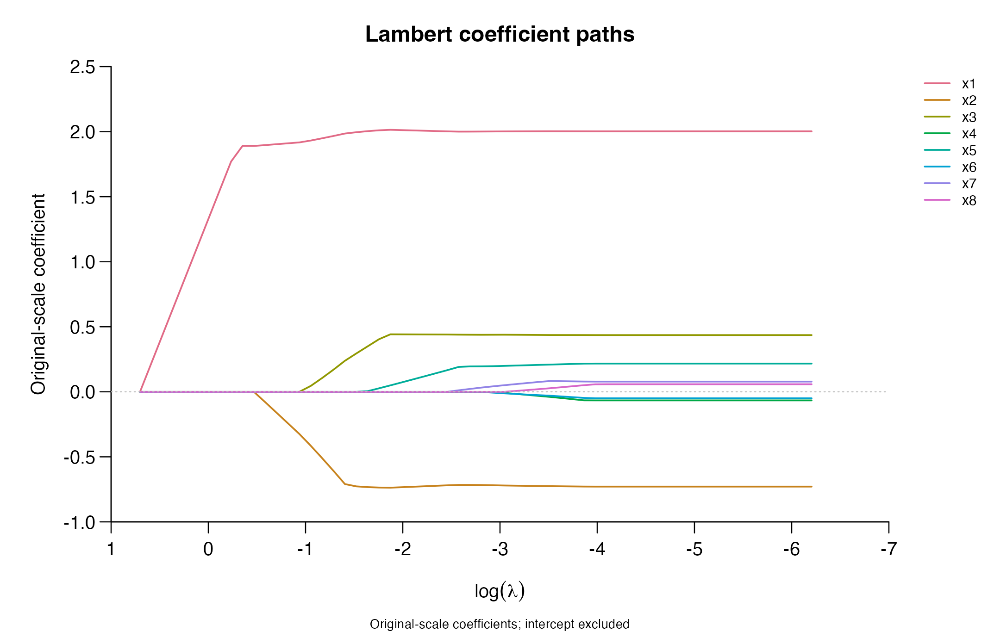
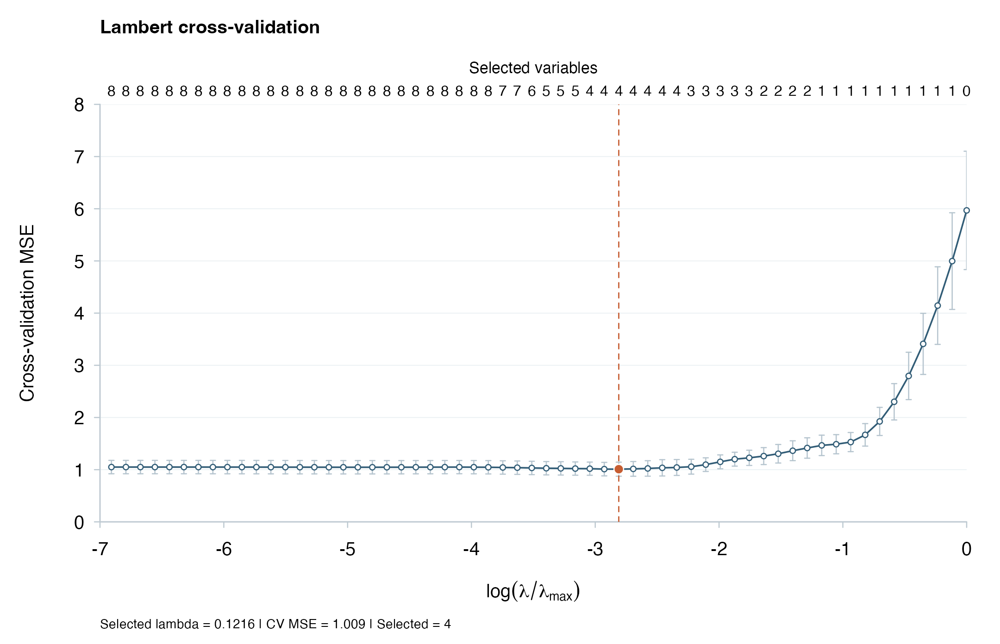
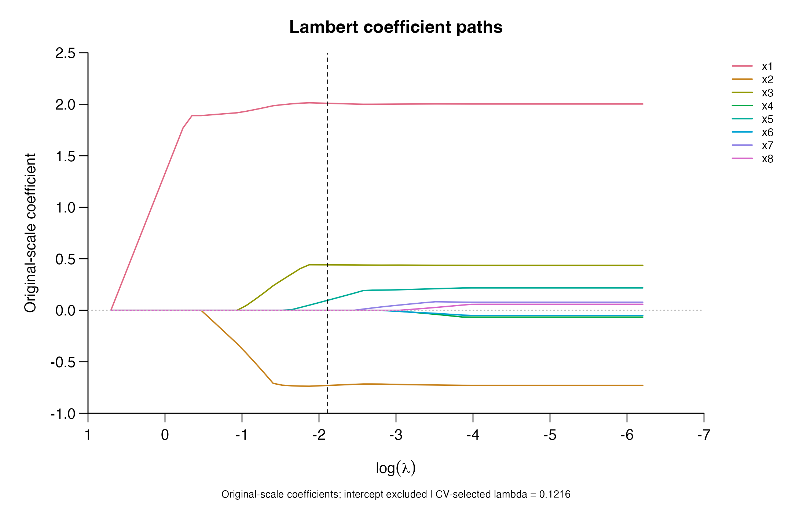

Introduction
lambertReg fits sparse Gaussian regression with the
Lambert penalty. The main functions are lambert() for a
regularization path and cv.lambert() for choosing the
penalty strength by cross-validation. Both provide coefficient
extraction, prediction, and plotting methods. This guide follows one
example from fitting through prediction on new data.
For a training sample with n observations and p predictors, the package targets the penalized least-squares objective Q_\lambda(b)=\frac{1}{2n}\lVert y_c-Zb\rVert_2^2+ \sum_{j=1}^p p_\lambda(|b_j|). Here b\in\mathbb R^p contains standardized coefficients, y_c is the centered response, and Z is the centered and scaled training matrix. The intercept is unpenalized. The parameter \lambda>0 controls the strength of the Lambert penalty p_\lambda, whose shape is fixed at c=1. The penalty becomes constant at coefficient magnitudes of e\lambda and above. Cyclic coordinate updates seek a stationary solution; a global minimum is not guaranteed for this nonconvex objective.
Installation
The package requires R (>= 4.1.0), Rcpp, and an R-compatible C++ compiler. Install from a local clone of the GitHub repository:
To build this guide as an installed vignette, use
R CMD build lambertReg and install the resulting source
archive. Vignette building additionally requires knitr, rmarkdown, and
Pandoc.
Quick start
Prepare the data
The example has 100 observations, eight predictors, and three nonzero coefficients. We use 80 observations for training and reserve 20 for prediction. The test observations do not enter preprocessing or tuning.
library(lambertReg)
set.seed(42)
x <- matrix(rnorm(100 * 8), nrow = 100, ncol = 8)
colnames(x) <- paste0("x", seq_len(ncol(x)))
y <- 2 * x[, 1] - x[, 2] + 0.5 * x[, 3] + rnorm(100)
train <- seq_len(80)
x_train <- x[train, , drop = FALSE]
y_train <- y[train]
x_test <- x[-train, , drop = FALSE]
y_test <- y[-train]Fit a regularization path
Supply a numeric predictor matrix and a response vector to
lambert(). The default path has 60 logarithmically spaced
penalty fractions from 1 to 0.001, relative to the training entry score
\lambda_{\max}.
path <- lambert(x_train, y_train)
print(path)
#> Lambert regression (fixed shape c = 1)
#> 80 observations; 8 predictors; 60 penalty levels
#> 60/60 numerically verified fits (not global-optimum certificates)plot() displays the coefficient paths on the original
predictor scale. The intercept is omitted. The horizontal axis decreases
from left to right, following the path from stronger to weaker
regularization.
plot(path, labels = TRUE)
A path fit does not automatically choose a penalty. Use
index to extract coefficients or predictions at a stored
path position:
| Coefficient | |
|---|---|
| (Intercept) | -0.0324 |
| x1 | 1.9955 |
| x2 | -0.7271 |
| x3 | 0.2947 |
| x4 | 0.0000 |
| x5 | 0.0000 |
| x6 | 0.0000 |
| x7 | 0.0000 |
| x8 | 0.0000 |
predict(path, newx = x_test[1:3, , drop = FALSE], index = 20L)
#> s20
#> [1,] 3.1189695
#> [2,] 0.4170294
#> [3,] -0.2918680Choose the penalty by cross-validation
cv.lambert() uses five folds by default. Supplying
foldid makes the partition explicit and reusable. Each fit
uses four folds for training and the remaining fold for validation.
foldid <- sample(rep(1:5, length.out = length(y_train)))
fit <- cv.lambert(x_train, y_train, foldid = foldid)
print(fit)
#> Cross-validated Lambert regression (5 folds)
#> Selected index: 25; full-training lambda: 0.1215553
#> Status: verified_stationary; partial search: FALSE
stopifnot(fit$ok)The selected candidate minimizes the arithmetic mean of the fold mean
squared errors (MSEs). lambda.min is the selected penalty
for the full training data; it does not mean the smallest penalty in the
grid. index identifies its path position and
fraction.min its relative scale.
knitr::kable(data.frame(
Lambda = fit$lambda.min,
Fraction = fit$fraction.min,
CV_MSE = fit$cvm[fit$index],
Selected = fit$nzero[fit$index]
), digits = 4, row.names = FALSE)| Lambda | Fraction | CV_MSE | Selected |
|---|---|---|---|
| 0.1216 | 0.0602 | 1.0095 | 4 |
Plot the CV error
plot(fit)
The horizontal axis is \log(\lambda/\lambda_{\max}), increasing from weaker to stronger regularization. Blue points show the mean fold MSE; the orange point and dashed line mark the selected penalty. The upper axis counts selected variables in each full-training model, excluding the intercept. A coefficient is counted when its original-scale magnitude exceeds 10^{-8}.
Error bars show one descriptive standard error: the standard deviation of the K fold MSEs divided by \sqrt K, where K is the number of folds. Because training samples overlap, these are not independent-sample confidence intervals. Selection uses the minimum CV error, rather than a one-standard-error rule.
For a compact figure, use style = "paper". Other display
options change the same stored results without refitting:
Extract the selected model
coef(fit) returns the intercept and selected
coefficients in the original units. No post-selection least-squares
refit is applied.
| Coefficient | |
|---|---|
| (Intercept) | -0.0246 |
| x1 | 2.0094 |
| x2 | -0.7300 |
| x3 | 0.4412 |
| x4 | 0.0000 |
| x5 | 0.0958 |
| x6 | 0.0000 |
| x7 | 0.0000 |
| x8 | 0.0000 |
The coefficient plot from a CV fit also marks the selected penalty:
plot(fit, type = "coefficients", labels = TRUE, xaxis = "lambda")
Predict on new observations
Supply new predictors in the same column order and with the same names as in training. Pass their original values; the fitted object incorporates the training transformation and predicts on the original response scale.
pred <- drop(predict(fit, newx = x_test))
knitr::kable(head(data.frame(Observed = y_test, Predicted = pred)), digits = 3)| Observed | Predicted |
|---|---|
| 2.386 | 3.246 |
| 1.992 | 0.002 |
| 1.432 | -0.505 |
| -0.996 | -0.343 |
| -3.390 | -2.128 |
| 5.358 | 2.311 |
knitr::kable(data.frame(
RMSE = sqrt(mean((y_test - pred)^2)),
MAE = mean(abs(y_test - pred))
), digits = 4, row.names = FALSE)| RMSE | MAE |
|---|---|
| 1.3382 | 1.0338 |
These held-out errors illustrate prediction on new observations. For a method comparison, use an independent test sample or outer cross-validation; the tuning-CV minimum is not an external test error.
Penalty scale and preprocessing
Within each training sample, predictor j is centered by its mean \bar x_j and divided by its centered root-mean-square value s_j=\{n^{-1}\sum_{i=1}^n(x_{ij}-\bar x_j)^2\}^{1/2}. Thus Z_{ij}=(x_{ij}-\bar x_j)/s_j has squared column norm n. The response is centered by its training mean and is not variance-scaled. CV estimates these quantities using only the training observations of each fold.
The entry score \lambda_{\max}=\max_j|Z_j^\top y_c|/n, where Z_j is column j of the standardized design, defines the upper end of the relative path. For candidate fraction \tau_k\in(0,1] in fold f, the penalty is \lambda_{k,f}=\tau_k\lambda_{\max,f}. CV therefore compares common fractions, while absolute penalties can differ between folds. The score averages fold MSEs arithmetically, including when folds have unequal sizes. Numerical ties favor the larger fraction.
A custom fractional grid must be positive, strictly decreasing, and
no larger than one. Absolute penalties can instead be supplied to
lambert():
fractions <- 10^seq(0, -3, length.out = 80L)
fit_custom <- cv.lambert(x_train, y_train, foldid = foldid,
lambda_fraction = fractions)
path_absolute <- lambert(x_train, y_train, lambda = path$lambda)The scalar penalty and coordinate threshold are also available
directly. For magnitude t\geq0,
lambert_penalty(t, lambda) evaluates p_\lambda(t);
lambert_threshold(z, lambda) applies the scalar update to
the partial-residual score z for a
standardized coordinate of unit curvature.
z <- c(-3, -1, 0, 1, 3)
knitr::kable(data.frame(
Score = z,
Penalty_at_magnitude = lambert_penalty(abs(z), lambda = 1),
Updated_coefficient = lambert_threshold(z, lambda = 1)
), digits = 4, row.names = FALSE)| Score | Penalty_at_magnitude | Updated_coefficient |
|---|---|---|
| -3 | 1.5973 | -3 |
| -1 | 0.9089 | 0 |
| 0 | 0.0000 | 0 |
| 1 | 0.9089 | 0 |
| 3 | 1.5973 | 3 |
Diagnostics and reproducibility
knitr::kable(data.frame(
Selected_fit_ok = fit$ok,
Status = fit$status,
Partial_CV_search = fit$partial_search,
Full_path_complete = fit$full_path_complete
), row.names = FALSE)| Selected_fit_ok | Status | Partial_CV_search | Full_path_complete |
|---|---|---|---|
| TRUE | verified_stationary | FALSE | TRUE |
ok describes the selected fit,
partial_search records unavailable CV candidates, and
full_path_complete describes the full-training path. For
details, inspect cv_diagnostics or
lambert.fit$diagnostics. Unverified fits cannot be used by
predict() or coef() and appear as gaps in path
plots.
Each penalty position considers warm and zero starts, retaining the
verified candidate with the lower objective. Exactly identical initial
vectors can share a verified solve; the executed and
reused columns in attempts record this.
max_sweeps and kkt_tol control the iteration
budget and normalized stationarity tolerance. The default values are
10,000 sweeps and 10^{-7};
active-curvature diagnostics provide an additional check. The help pages
describe the acceptance criteria.
Inputs must be finite dense numeric matrices with columns that vary in every training sample. The current interface supports Gaussian responses; it does not support observation weights or automatic missing-value handling. Save the folds, input column order, package version, and controls with an analysis. Supplied folds do not consume random numbers; otherwise folds are sampled from the caller’s random-number state. Early stopping is not applied.
Further information
?lambert
?cv.lambert
?lambert_penalty
citation("lambertReg")Source code and issue reporting are available at byuzbasi/lambertReg. The package is distributed under GPL-3.